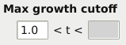
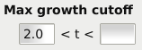
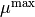

Parameters¶
In this chapter we describe how parameters are handled in GATHODE, which parameters exist and which properties they influence.
Changing parameters¶
In GATHODE, the extraction of properties (such as maximal growth rate, growth yield, etc.) depends on certain parameters.
Some parameters are defined for the whole plate, whereas other parameters can have plate-wide defaults which can be overridden for each replicate group or even each single well.
To change a plate parameter or a plate default parameter, make sure no replicate is selected from the list. Parameters which have been explicitly set have a white background, parameters without a value have a grey background. In the following screenshot, the lower cutoff of the maximal growth is set while the upper cutoff of the maximal growth values is unset.
{kind=link}
Parameters can also be set for a single sample_condition replicate group, or even for a single well. Parameters are inherited from plate to replicate group and from replicate group to single well. Parameters inherited from the plate that are not changed by any of the child wells (wells constituting the replicate group) have a grey background, parameters explicitly set without a change in its child wells have a white background. Parameters that are modified in at least one of the underlying single wells but are otherwise set to the plate-wide default change their background colour from grey to white from top to bottom. In contrast, the background of parameters that are explicitly set and at least one of the underlying single wells has a modified value, change from grey to white from left to right. In the screenshot below, the lower cutoff for the maximal growth rate is explicitly changed for the selected replicate group, and in at least one of its child wells the value is changed further. The value of the upper cutoff is not changed for this replicate group, but one of the child wells has a differing value.
{kind=link}
Parameter descriptions¶
Normal Parameters¶
High density correction¶
The optical density at high values is corrected by a cubic function whose parameters are the three coefficients a1, a2 and a3. For details see High density correction.
log(OD) cutoff¶
Allows to restrain the detection of all properties to locations where the value of is above this cutoff. This can ensure that the noise at low OD does not hamper the detection algorithms. Further, all figures use this as the lower value of the OD-range in the log-scale.
Smoothing¶
To obtain a smoother curve of the optical density, it can be preprocessed by a smoothing spline. In GATHODE the function UnivariateSpline from the SciPy library is used for this and the two parameters k and s correspond to the degree of the smoothing spline and the smoothing factor, respectively.
The outcome of the Growth yield is influenced by these parameters, as well as the graphs of the smoothed OD and smoothed log(OD).
Fit window¶
The fit window defines the number of data-points that are included in fits locally around a data-point. Such fits are performed when determining the maximal growth rate and to identify the Growth yield.
Lag at¶
The interception of the exponential function at  with this value defines the lag time, see section about maximal growth rate.
Maximal growth cutoff¶
The cutoff values allow to constrain the time of the maximal
growth rate . This may
be especially useful at low OD, as fits of an exponential function
may be difficult and thus result in noisy estimations of  leading to a false identification of its maximum.
leading to a false identification of its maximum.
Special Parameters¶
Two parameters may only be changed when they are not hidden (File ‣ Settings). The reason for this is that these make the results mathematically less strict, therefore caution has to be exercised when changing these.
Allow maximal growth at cutoff¶
When an interval for the maximal growth is specified, the location of must not be at the endpoints of the interval, as this would mean a local maximum could not be found.
This strict requirement of a local maximum can be loosened by setting
the parameter allow at cutoff, which mathematically means that
the derivative to of may be non-zero.
Allow growth yield’s slope to be zero within n standard errors¶
The requirement that the slope of a linear regression in a fit-window around a data-point is zero within one standard error can be loosened to n standard errors.